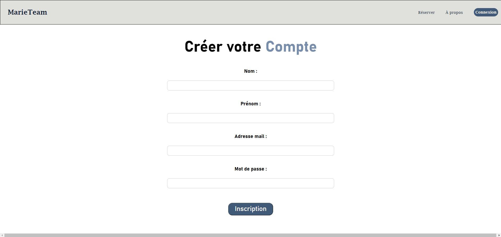

Réalisation Professionnelle 1 : Application Web
Cette partie du projet consiste en la création d'une application web permettant aux clients de :
- Consulter les liaisons maritimes disponibles
- Voir les tarifs et horaires
- Effectuer des réservations en ligne
- Avoir une partie admin afin de gérer les utilisateurs et les réservations
je vais vous présenter les différentes étapes de la réalisation de cette application web et les différentes fonctionnalités.

Tout d'abord nous avons créer un DCU (diagrammes de cas d'utilisation) pour le projet, afin de déterminer les besoins des utilisateurs et des gestionnaires.

Nous avons réalisé ensuite un MCD (Modèle Conceptuel de Données) avec le logiciel looping pour définir les entités et les relations entre elles.

Suite a cela nous avons donc importé le script SQL donné par looping pour créer notre base de données pour ensuite la remplir avec un jeu d'essai.

Après avoir créer la base de données et notre jeu d'essai nous avons commencé a coder une première partie du site, nous pouvons voir d'abord la page d'accueil ainsi qu'une fonctionnalité qui est ici la page d'inscription.

cette fonctionnalité permet donc d'aller écrire dans la base de données les informations rentrés par les utilisateurs a l'inscription, afin de pouvoir la liaison entre le code et la BDD.